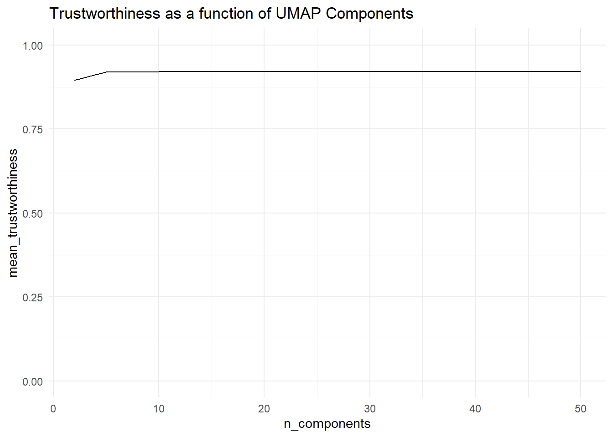
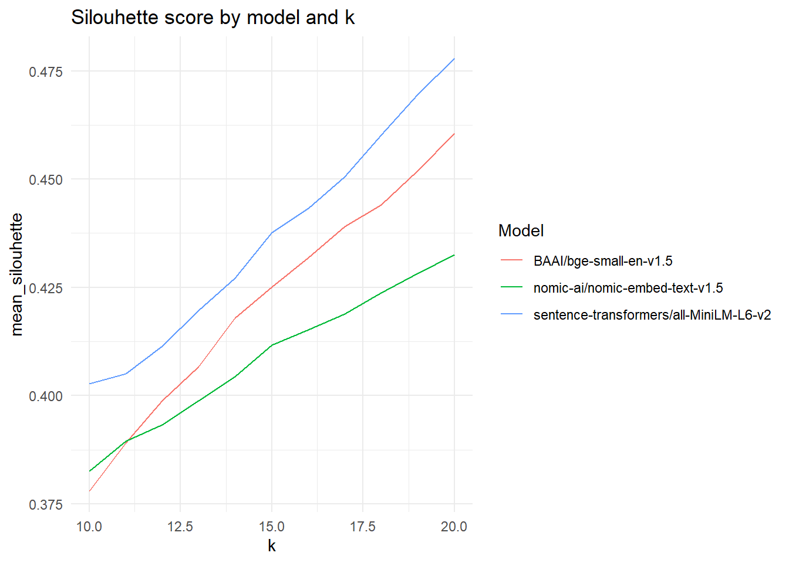
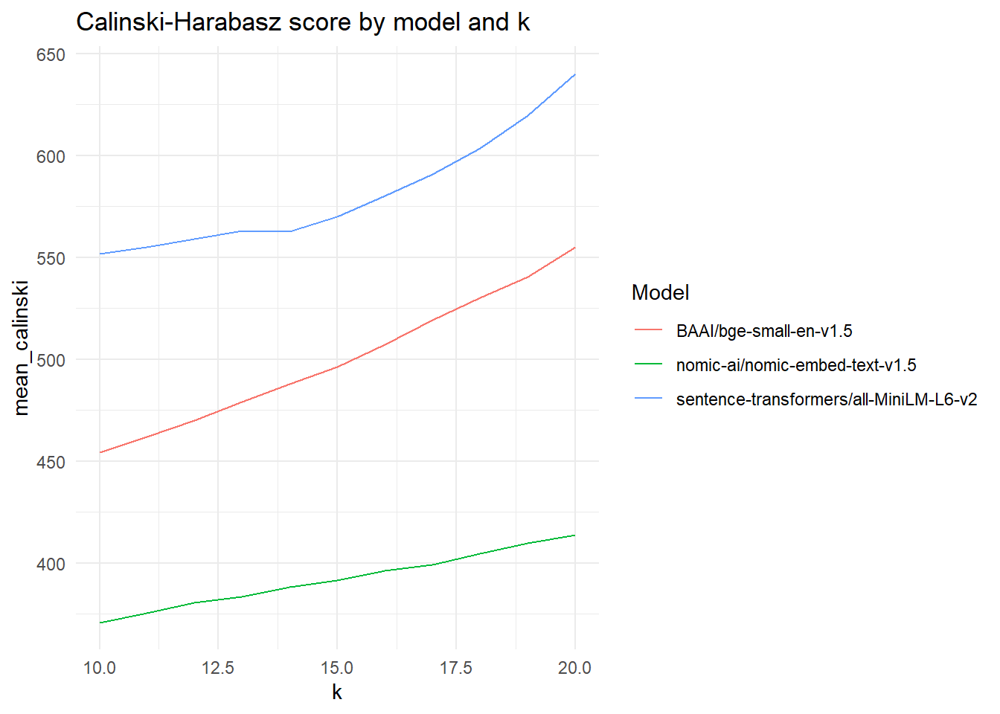
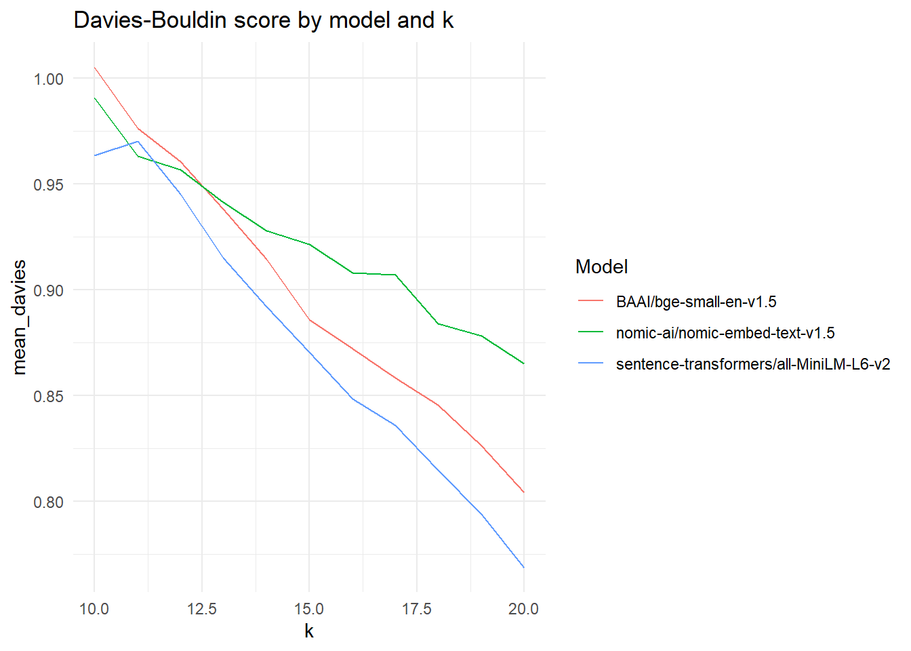
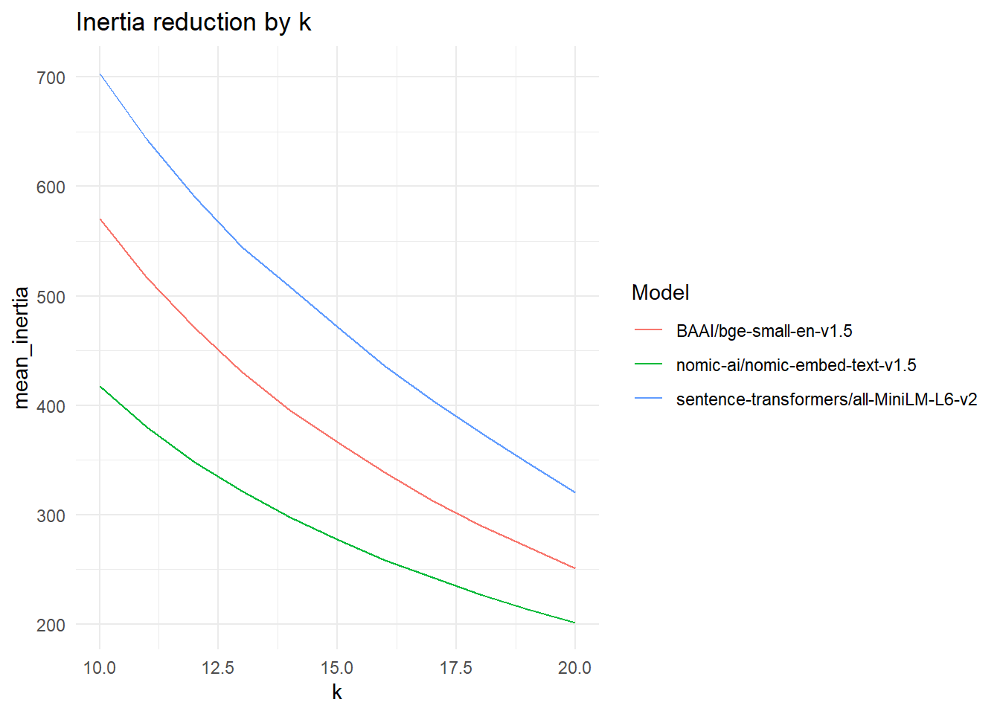

| dedup_threshold | model | mean_silouhette | mean_davies | mean_calinski |
|---|---|---|---|---|
| 0.90 | BAAI/bge-small-en-v1.5 | 0.4159070 | 0.9057888 | 438.4609 |
| 0.90 | nomic-ai/nomic-embed-text-v1.5 | 0.3948451 | 0.9395449 | 289.0919 |
| 0.90 | sentence-transformers/all-MiniLM-L6-v2 | 0.4326853 | 0.8798572 | 570.2634 |
| 0.92 | BAAI/bge-small-en-v1.5 | 0.4158905 | 0.9054889 | 476.0618 |
| 0.92 | nomic-ai/nomic-embed-text-v1.5 | 0.3988497 | 0.9490282 | 343.7503 |
| 0.92 | sentence-transformers/all-MiniLM-L6-v2 | 0.4353363 | 0.8746252 | 577.0333 |
| 0.95 | BAAI/bge-small-en-v1.5 | 0.4345893 | 0.8854370 | 585.9153 |
| 0.95 | nomic-ai/nomic-embed-text-v1.5 | 0.4332424 | 0.8778875 | 543.5490 |
| 0.95 | sentence-transformers/all-MiniLM-L6-v2 | 0.4425355 | 0.8687205 | 597.0037 |
Model Selection
We compared the following parameters against each other, chosing our final configuration based on a combined evaluation of statistical fit; and expert assessment. The focus was to select a configuration that was granular enough to show meaningful clusters, but broad enough to make the output interpretable by humans.
We compared sentence-transformers/all-MiniLM-L6-v2, BAAI/bge-small-en-v1.5, and nomic-ai/nomic-embed-text-v1.5 across deduplication thresholds of \(d \in (0.9,0.92,0.95)\). We tested the k-means clustering for \(10 \leq k \leq 20\), wherein clusters were formed on dimensionality-reduced embeddings using UMAP. we tested for UMAP components \(C \in (2,5,10,15,20,30,50)\).
We evaluated the resulting model configurations based on inertia, Davies-Bouldin scores (Davies & Bouldin, 1979), Calinski-Harabasz scores (Caliński & Harabasz, 1974), and silouhette scores. For the dimensionality sweep with UMAP, we used trustworthiness scores against the original embedding space.
TipInertia Scores
Inertia is defined as
$$
$$
, i.e. the sum of squared distances from each point to the centroid of the assigned cluster. It is scale-dependent () and decreases as \(k\) increases. The established usage is to interpret it visually, and identify so-called “elbows” which is where the increase in \(k\) alone does not meaningfully contribute to a decrease in inertia anymore, indicating a good fit for \(k\).
TipSilouhette-Scores
Silouhette scores are the mean distance of points to other points within the cluster they are assigned to, and to the nearest other cluster. Averaged overa ll points, they measure how much closer points are to their own cluster compared to neighboring clusters, wherein higher silouhette scores indicate better model fit.
TipDavies-Bouldin-Scores
Davies-Bouldin scores measure how compact a cluster is by comparing within-cluster scatter. Scatter \(s_i\) for cluster \(i\) is defined as the mean distance of each point \(i_{1,...,n}\) to the centroid \(c_i\). Then, for each cluster pair \(i\), \(j\), the worst possible
$$
$$
TipCaliski-Harabasz Scores
Calisnki-Harabasz scores are an indicator of dispersion within compared against between cluster dispersion, and can be interpreted similar to an F-Statistic.
Deduplication Thresholds and Models
We based our overall choice of model and configuration on various factors. The embedding model was chosen based on its performance in clustering overall, but also its ability to semantically deduplicate consumer technologies in a reasonable fashion.
While higher deduplication thresholds produced statistically better results, we opted for \(d = 0.9\) because at higher thresholds, very slight variations of the same technology (e.g. smartphone, smart phone) were no longer deduplicated, which would have given these technologies unwarranted semantic weight when clustering at later steps.
We report all measures per treshold and model below.
Trustworthiness of UMAP
To cluster the semantic embeddings, we tested several dimensionality reduction thresholds for UMAP components \(C\), focusing primarily on trustworthiness, i.e. how well a low-dimensional embedding space can preserve local neighborhoods produced in the original space.

| n_components | mean_trustworthiness |
|---|---|
| 2 | 0.8945574 |
| 5 | 0.9193625 |
| 10 | 0.9214086 |
| 15 | 0.9206343 |
| 20 | 0.9209666 |
| 30 | 0.9207218 |
| 50 | 0.9211253 |
Clustering Component \(k\)
We limited the clusters we tested to \(10 \leq k \leq 20\). Within these parameters, performance tendencially rose across models with an increase in \(k\), but there was no clear jumping point where one model clearly outperformed models with lower \(k\).
We compare silouhette, Calinski-Harabasz scores and Davies-Bpouldin scores within and across models, and inertia within models, as inertia is dependent on both \(k\) (expected to lower with higher \(k\)), but also dimensionality of the embedding space, which differs between models.
| k | model | mean_inertia | mean_silouhette | mean_davies | mean_calinski |
|---|---|---|---|---|---|
| 10 | BAAI/bge-small-en-v1.5 | 570.4259 | 0.3780139 | 1.0052700 | 454.2374 |
| 10 | nomic-ai/nomic-embed-text-v1.5 | 417.0669 | 0.3824960 | 0.9906202 | 370.8841 |
| 10 | sentence-transformers/all-MiniLM-L6-v2 | 703.3039 | 0.4027420 | 0.9633529 | 551.5933 |
| 11 | BAAI/bge-small-en-v1.5 | 516.9110 | 0.3890961 | 0.9761916 | 461.8056 |
| 11 | nomic-ai/nomic-embed-text-v1.5 | 379.6185 | 0.3894239 | 0.9631637 | 375.5395 |
| 11 | sentence-transformers/all-MiniLM-L6-v2 | 643.5072 | 0.4049815 | 0.9701022 | 555.1271 |
| 12 | BAAI/bge-small-en-v1.5 | 470.8778 | 0.3988554 | 0.9607137 | 469.9159 |
| 12 | nomic-ai/nomic-embed-text-v1.5 | 347.7807 | 0.3932328 | 0.9566352 | 380.5073 |
| 12 | sentence-transformers/all-MiniLM-L6-v2 | 590.8087 | 0.4114493 | 0.9451243 | 559.0517 |
| 13 | BAAI/bge-small-en-v1.5 | 430.1460 | 0.4066739 | 0.9383160 | 479.2261 |
| 13 | nomic-ai/nomic-embed-text-v1.5 | 321.7481 | 0.3988360 | 0.9413860 | 383.3111 |
| 13 | sentence-transformers/all-MiniLM-L6-v2 | 544.5186 | 0.4197411 | 0.9150884 | 563.0731 |
| 14 | BAAI/bge-small-en-v1.5 | 395.5791 | 0.4179460 | 0.9145249 | 487.9219 |
| 14 | nomic-ai/nomic-embed-text-v1.5 | 297.4326 | 0.4043744 | 0.9279057 | 388.0855 |
| 14 | sentence-transformers/all-MiniLM-L6-v2 | 508.3716 | 0.4271434 | 0.8920093 | 562.5234 |
| 15 | BAAI/bge-small-en-v1.5 | 366.3527 | 0.4251450 | 0.8858229 | 496.2822 |
| 15 | nomic-ai/nomic-embed-text-v1.5 | 277.0316 | 0.4116972 | 0.9214017 | 391.5438 |
| 15 | sentence-transformers/all-MiniLM-L6-v2 | 471.4677 | 0.4377202 | 0.8704522 | 570.0483 |
| 16 | BAAI/bge-small-en-v1.5 | 338.2236 | 0.4319236 | 0.8722108 | 507.3297 |
| 16 | nomic-ai/nomic-embed-text-v1.5 | 258.4293 | 0.4151791 | 0.9080970 | 396.3141 |
| 16 | sentence-transformers/all-MiniLM-L6-v2 | 436.0601 | 0.4433146 | 0.8484377 | 580.1989 |
| 17 | BAAI/bge-small-en-v1.5 | 312.3283 | 0.4390292 | 0.8584814 | 519.1584 |
| 17 | nomic-ai/nomic-embed-text-v1.5 | 242.6471 | 0.4189134 | 0.9070426 | 399.1377 |
| 17 | sentence-transformers/all-MiniLM-L6-v2 | 404.1923 | 0.4505399 | 0.8359917 | 590.8659 |
| 18 | BAAI/bge-small-en-v1.5 | 290.0856 | 0.4441287 | 0.8455670 | 530.2066 |
| 18 | nomic-ai/nomic-embed-text-v1.5 | 227.2023 | 0.4237415 | 0.8839621 | 404.7457 |
| 18 | sentence-transformers/all-MiniLM-L6-v2 | 375.4425 | 0.4602357 | 0.8149733 | 603.4996 |
| 19 | BAAI/bge-small-en-v1.5 | 270.2724 | 0.4519890 | 0.8265230 | 540.3708 |
| 19 | nomic-ai/nomic-embed-text-v1.5 | 213.4335 | 0.4282671 | 0.8783302 | 409.6212 |
| 19 | sentence-transformers/all-MiniLM-L6-v2 | 347.4090 | 0.4695216 | 0.7940145 | 619.5830 |
| 20 | BAAI/bge-small-en-v1.5 | 250.8386 | 0.4606172 | 0.8043329 | 555.1514 |
| 20 | nomic-ai/nomic-embed-text-v1.5 | 201.3648 | 0.4326085 | 0.8651446 | 413.7442 |
| 20 | sentence-transformers/all-MiniLM-L6-v2 | 320.3529 | 0.4779865 | 0.7688638 | 640.2039 |




Across all possible \(C\) and \(d\), all-MiniLM-L6-v2 outperforms the other models tested.
Final Configuration
We ultimately arrived at \(d = 0.9\), \(C = 10\), model = all-MiniLM-L6-v2, and \(k = 16\) because this solution produced the best compromise between statistical fit and human interpretability.
| model | dedup_threshold | n_components | k | n_unique_technologies | inertia | silhouette | davies_bouldin | calinski_harabasz | trustworthiness | silhouette_delta |
|---|---|---|---|---|---|---|---|---|---|---|
| sentence-transformers/all-MiniLM-L6-v2 | 0.9 | 10 | 16 | 910 | 421.4928 | 0.4360419 | 0.9203377 | 459.4485 | 0.9235524 | -0.0096259 |
References
Caliński, T., & Harabasz, J. (1974). A dendrite method for cluster analysis. Communications in Statistics, 3(1), 1–27. https://doi.org/10.1080/03610927408827101
Davies, D. L., & Bouldin, D. W. (1979). A Cluster Separation Measure. IEEE Transactions on Pattern Analysis and Machine Intelligence, PAMI-1(2), 224–227. https://doi.org/10.1109/TPAMI.1979.4766909